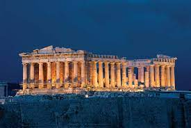
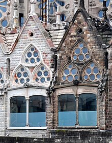
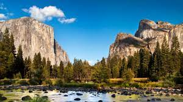

WORLD BEAUTIFUL LANDMARKS
Europe
Parthenon

The Parthenon is a former temple on the Athenian Acropolis, Greece, that was dedicated to the goddess Athena during the fifth century BC. Its decorative sculptures are considered some of the high points of classical Greek art, an enduring symbol of Ancient Greece, democracy and Western civilization.
La Sagrada Famillia

The Basílica i Temple Expiatori de la Sagrada Família, shortened as the Sagrada Família, is an under construction church in the Eixample district of Barcelona, Catalonia, Spain. It is the largest unfinished Catholic church in the world.
Louvre Museum

The Louvre, or the Louvre Museum, is a national art museum in Paris, France. It is located on the Right Bank of the Seine in the city's 1st arrondissement and home to some of the most canonical works of Western art, including the Mona Lisa and the Venus de Milo.
Asia
Burj-Khalifa

Burj Khalifa the world's tallest building but it has also broken two other impressive records: tallest structure, previously held by the KVLY-TV mast in Blanchard, North Dakota, and tallest free-standing structure, previously held by Toronto's CN Tower.
Boracay Island

Boracay is a small island in the central Philippines. It's known for its resorts and beaches. Along the west coast, White Beach is backed by palm trees, bars and restaurants. On the east coast, strong winds make Bulabog Beach a hub for water sports. Nearby, the observation deck on Mount Luho offers panoramic views over the island. Offshore, coral reefs and shipwrecks are home to diverse marine life.
Seoul National Park

The Bukhansan National Park in Seoul and Gyeonggi covers an area of 79.92 km² and was established on 2 April 1983. Bukhansan means "mountains north of the Han River." The park contains forested areas, temples and granite peaks. The three main peaks are Baekundae, 836.5 m, Insubong, 810.5 m and Mangnyeongdae, 799.5 m.
America
The Statue of Liberty

The Statue of Liberty is a colossal neoclassical sculpture on Liberty Island in New York Harbor in New York City, in the United States. The copper statue, a gift from the people of France, was designed by French sculptor Frédéric Auguste Bartholdi and its metal framework was built by Gustave Eiffel.
San Diego Balboa Park
 Balboa Park is a 1,200-acre historic urban cultural park in San Diego, California, United States. In addition to open space areas, natural vegetation zones, green belts, gardens, and walking paths, it contains museums, several theaters, and the San Diego Zoo.
Balboa Park is a 1,200-acre historic urban cultural park in San Diego, California, United States. In addition to open space areas, natural vegetation zones, green belts, gardens, and walking paths, it contains museums, several theaters, and the San Diego Zoo.
America Yosimite

Yosemite Valley is a glacial valley in Yosemite National Park in the western Sierra Nevada mountains of Central California, United States. The valley is about 7.5 mi long and 3,000–3,500 ft deep, surrounded by high granite summits such as Half Dome and El Capitan, and densely forested with pines.